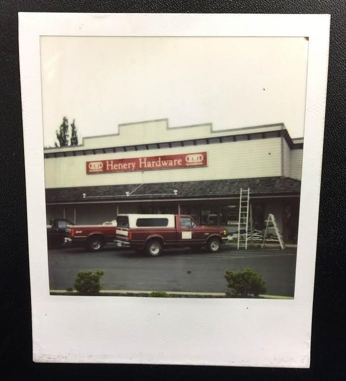

Free shipping on all ship to store orders
About Henery Hardware

Thank you for choosing Henery Hardware services including key making and Chip keys, color matching for paint projects, and a rental section with much to choose from. Serving others as we like to be served!
Reviews
I can't imagine that there would be anything you'd need that you couldn't find at Henery's Hardware. But the wonderfully helpful customer service is a tremendous asset to the business.
I am constantly amazed at how much they cram into this store. It's like someone took a big box store, distilled it to essentials, turned a shrink ray onto what was left, and then added staff who are both helpful and clueful.
I use Amazon a lot because I value my time: their interface lets you quickly drill down through a large selection to find what you need. But I also value local merchants who can provide something that I need Right Now and who give back to the community. So when I need hardware-ish things in Port Townsend, I always check Henery before ordering from Amazon. Several times, the staff has pointed me at things that I was honestly surprised to find (like Waddell table legs, when I wanted to make a half-door into a table).
I rent power washers and airless sprayer from them a lot. If I ever run into any problems with their equipment they fix the problem and give me a discount on the rental.
The staff is the best of ANY hardware store I have been into. The are helpful, knoledgeable, and very friendly. The store is well stocked to meet all you needs as well.
Ladies and Gents, the other reviews about the staff are indeed true. I always leave with what I need and a smile on my face.
Henery Hardware • Serving Others Like We Would Like To Be Served • Now In Four Locations